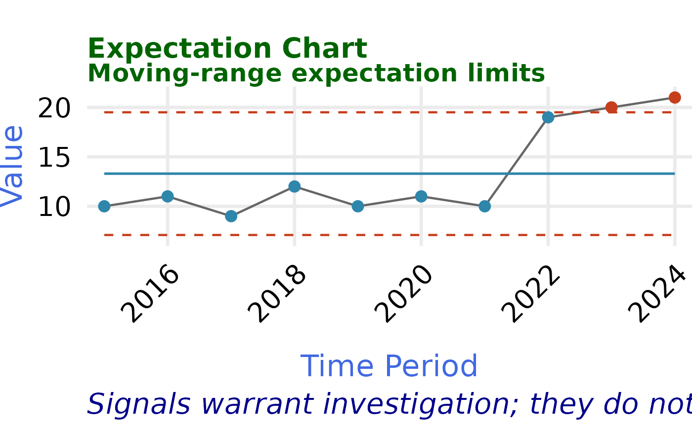

Creates a console-friendly expectation chart using the same moving-range
calculations as expectation_chart_data(). Points outside the expectation
limits, and points completing a run on one side of the center, are
highlighted for investigation. Signals describe unusual patterns in the
observed series; they do not establish a cause or prescribe an action.
Usage
plot_expectation_chart(
data,
date,
value,
run_length = 8L,
title = "Expectation Chart",
subtitle = "Moving-range expectation limits",
caption = "Signals warrant investigation; they do not identify causes.",
x_label = "Time Period",
y_label = "Value",
...
)Arguments
- data
A data frame containing longitudinal observations.
- date
Date column. Supply an unquoted name or character string.
- value
Numeric measure column. Supply an unquoted name or character string.
- run_length
Minimum run length passed to
detect_runs(). Set toNULLto omit run signals.- title, subtitle, caption
Plot labels. Use
NULLto omit a label.- x_label, y_label
Axis labels.
- ...
Additional arguments passed to
expectation_chart_data(), such aslower_bound,upper_bound, ormultiplier.
Value
A ggplot object. Its plotting data include run_signal and
signal columns, making the result straightforward to inspect or extend
with additional ggplot2 layers.
Examples
x <- data.frame(
year = 2015:2024,
measure = c(10, 11, 9, 12, 10, 11, 10, 19, 20, 21)
)
plot_expectation_chart(x, year, measure)
